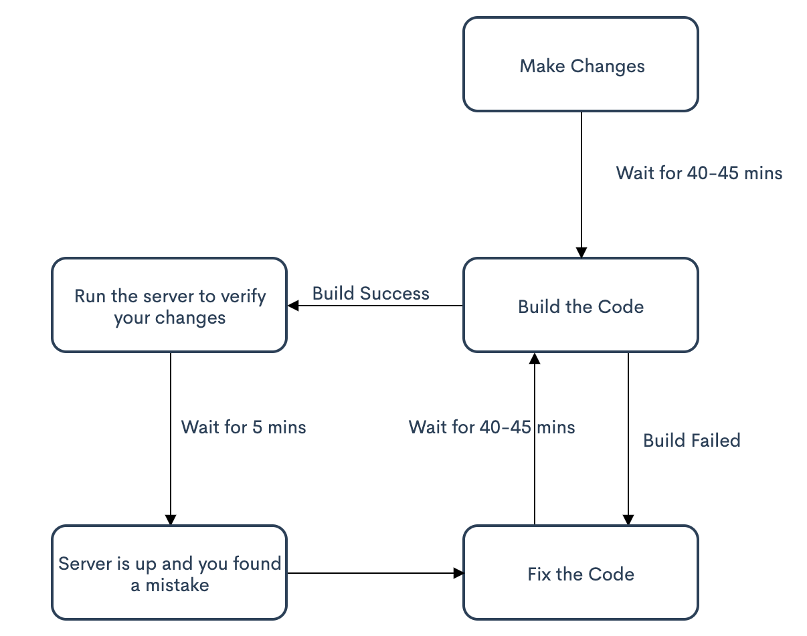
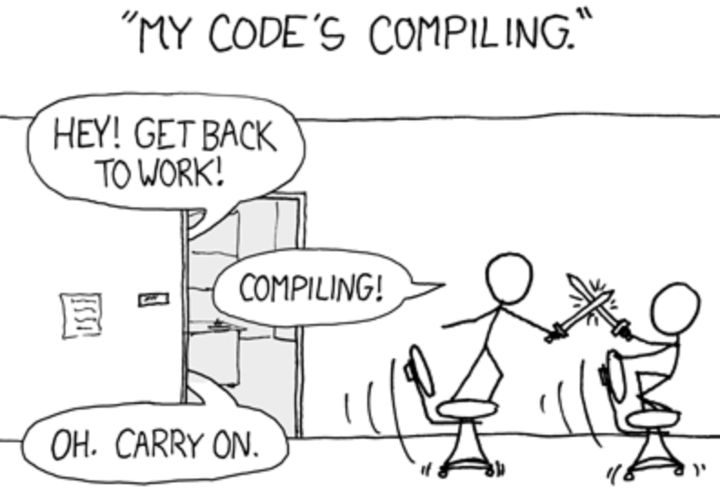

There are dozens of articles or books which can tell you the differences between a monolithic architecture vs a microservices architecture, Why and How one is better than the other, etc. But I won't try to replicate that here. The intention for this short is to share my experience working with a monolithic codebase and how I feel about it after working on it for a significant amount of time.
When I started my career, I had no idea about Software Development Life Cycle (SDLC), Version Control, Coding Styles, Best practices, etc. I started with almost zero knowledge about How software gets built, packaged, deployed, and made accessible to the world, and then I was introduced to this super big codebase that makes a lot of money and it's all there in one place. I was amazed at first with the fact that I didn't need to understand the whole of it to get my work done and it felt really great to add Changelist #20xxx021 to this giant codebase.
But after a while when I became familiar with the process of making or adding changes, building the project, testing it on the local server, I tried to understand what am I learning or How much I have developed just by working on this, excluding what I learned from talking to others. This is how my average day looked like after few months of being there :
See, How repetitive it gets just in 1 day, and that too at the time when I'm not writing any API or building a new UI component. I tried to understand why this is like that, Shouldn't this whole process must be really exciting and not nerve-wracking, I decided to deep dive into this codebase.
The monolithic codebase has more than 200 modules and more keeps getting added to it, and most of them (let's call them product modules) are tightly coupled with some of them (let's call them core modules). And between these core modules, there is extremely tight coupling, at a level that nobody might be able to decompose it, and it could become a whole different project costing significant money and resources to achieve this. Also, Each product's module(s) were dependent on these core modules in a very different fashion and were writing their own custom logics as well into these core modules, I guess I covered it when I said "extreme" tight coupling. Now, so what if they were tightly coupled, I just had to make changes in my teams' modules and move on right? NO! You have to include these modules into your build file as well because a lot of code gets generated with the XML Definitions you wrote. Hence, You include these modules for the build as well and the build time really shoots up to more than an hour sometimes and heats up your 32 GB RAM Macbook Pro to the point you can't hold it for 2 seconds. Eventually, I found some workarounds to not repeat the build cycle each time, but not a day passed by when I didn't run full build.
Now, When things are this fragile not everyone gets to work on the core modules, you use them to build your features on top of that, which then makes your work configuration based and pretty boring as well. Both UI as well as backend becomes some addition and removal of lines here and there.
For Example -
You want to add an error code, Go to the A file in the B module and add it on line 1347.
You want to expose your API, These are the set of files you go to and make an entry. And don't you dare forget even one of them or make a small error or miss adding that module for the build.
It was not like I always had configuration based work, I asked my manager to let me work on some API and luckily he took care of it. While I was working on the implementation of this API, I had the chance to work with one of my mentor who's really experienced and he introduced me to the world of Design Patterns, Thread Safety, OO Principles, SOLID, How to properly write JUnits, How to do code reviews and lots of other stuff about coding culture, architectures and exciting things happening around the world. All of this really pushed me and helped me realize my passion for software development or in broader terms, Technology.
Now, with all of this new knowledge, I starting looking at things in a really different way, It was not just "I want to finish my user stories as fast as possible", It became "I want to pick up the best possible user stories which helps me learn as much as possible". So, after a certain point in time, There were no such user stories left in my team, and being frustrated with the build cycle and lack of innovation, I decided to move on.
However, This doesn't mean I have regrets working at this company, as it taught me a lot and helped me find good mentors and friends for life. But I aspire to BE MORE.
Copyright © Deepanshu Rathi